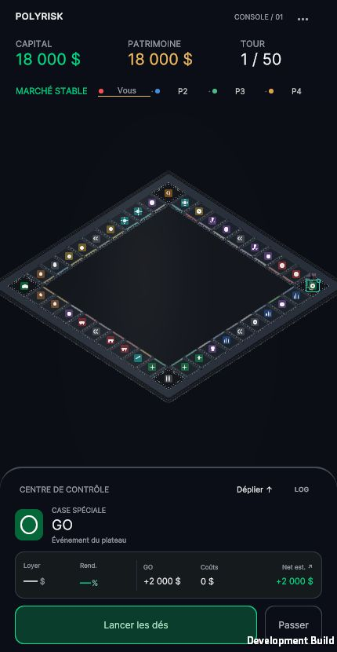
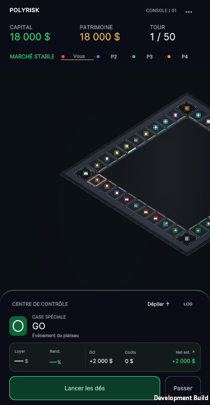
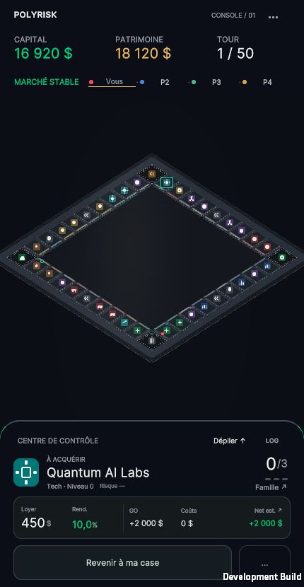
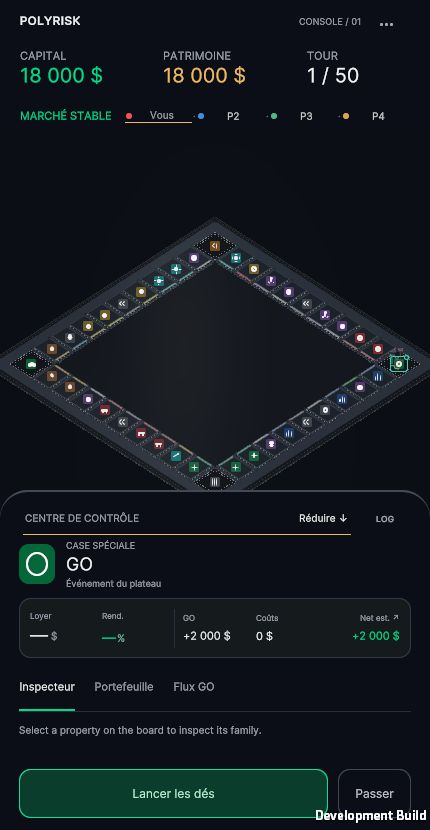

Au repos — même état initial, même cadrage



A et B partagent la matière neutre. B concentre sa différence dans les contacts et les reflets courts ; le centre reste calme.
Captures Unity WebGL réelles. Vue native 430 × 830. Aucune image générée. Arrêt pour validation artistique après cette passe.
Journal technique, paramètres, tests et limites · Jouer — B par défaut · Outils QA A/B

A et B partagent la matière neutre. B concentre sa différence dans les contacts et les reflets courts ; le centre reste calme.
L’alignement utilise les marqueurs réels de départ/contact, à vitesse native ×1. Les cadences des prises peuvent différer : les boutons d’événements permettent de comparer le même franchissement sans modifier les animations. La piste gauche est muette pour éviter deux clics superposés. Les bancs utilisent des parcours de présentation déterministes ; leurs poses de vérification et leurs dés QA sont distincts d’une partie réelle.
Tour réel : dés 4 + 6, dix cases de 9 à 19, coin 10, lock et retour stratégique. La séquence est conservée à vitesse native ; seule l’attente après le retour a été retirée en coupant la fin, sans réencodage. Prise intégrale de 39 s. Le son vient du jeu, sans microphone.

Images extraites des vidéos, sans retouche ; l’enveloppe s’évalue en mouvement. Le cadrage peut varier de quelques pixels avec le rythme des frames.


612 assertions existantes + 315 contrôles Editor, 95 invariants A/B, 8 contrôles d’enveloppe, 157 contrôles de mouvement dans chaque variante et 75 contrôles caméra passent. Ancrage B stabilisé : X 46,8–53,3 %, Y 49,8–52,6 % de la zone utile. Fenêtres B : 46,6 ms sans capture / 50,2 ms avec capture et traces, 76 draw calls dans les deux cas. Les vidéos de banc sont autour de 10 images/s sur ce poste, la partie réelle autour de 14. Aucun test sur téléphone physique ni temps GPU revendiqué.
Données de validation · Périmètre et fichiers préservés · Mesures brutes